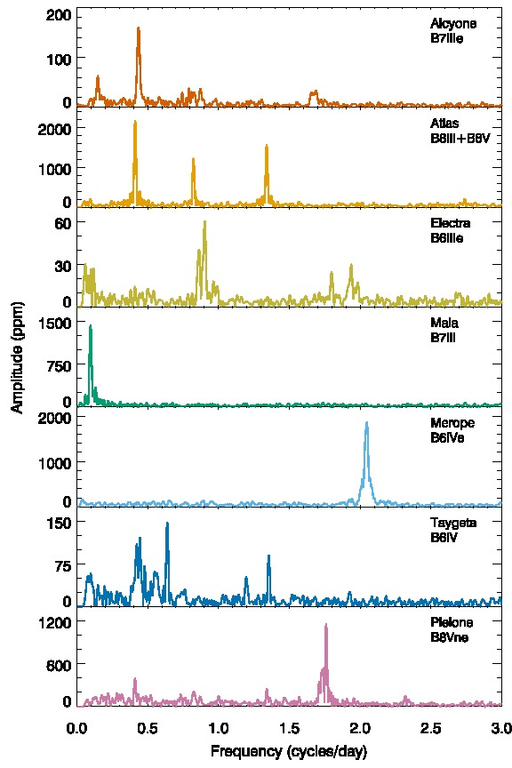
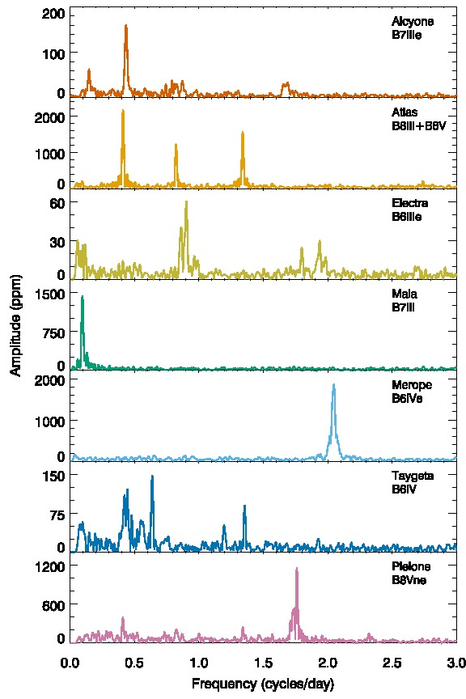

Finding Exoplanets
Transiting Naked-Eye Stars
Benjamin Pope, NYU
Sagan Fellows' Symposium
benjaminpope.github.io/talks/sagan/symposium.html
Halo Photometry
\[ f_i \equiv \sum\limits_i w_j p_{ij} \]
\[\begin{align} TV \equiv \dfrac{\sum_i |f_i - f_{i-1}|} {\sum_i f_i } \end{align} \]
This is the L1 norm on the derivative of the time series.
TV is convex and has analytic derivatives in Theano - easy to optimize.
Pleiades
Πλειάδες, the Seven Sisters
Alcyone, Atlas (dad), Electra, Maia, Merope, Taygeta, Pleione (mum)
Atlas lightcurve: raw (top) and halo (bottom)
 

Lightcurves of All Seven Bright Pleiades
I am currently searching all bright stars in K2 for transiting planets - none so far, but plenty of asteroseismology!
Aldebaran
α Tauri
الدبران ,the follower
... after the Pleiades!
Yes! We get the exact right frequency!

\[M = 1.27^{+0.24}_{-0.2} \, \mathrm{M_{\odot}}\] and age \(4.86^{+3.56}_{-2.04} \, \rm Gyr \)
\[M = 1.16^{+0.07}_{-0.07} \, \mathrm{M_{\odot}}\] and age \(6.38^{+1.42}_{-1.12} \, \rm Gyr \)
Using MESA isochrones & stellar tracks, we find that on the main sequence Aldebaran b had a semi-major axis of \(1.507 \pm 0.03 \) AU and Aldebaran had a luminosity \(2.0 \pm 0.7 \, L_\odot \)...
so Aldebaran b had an insolation comparable to Earth when its star was on the main sequence.
The Future
Let us know if we can help.